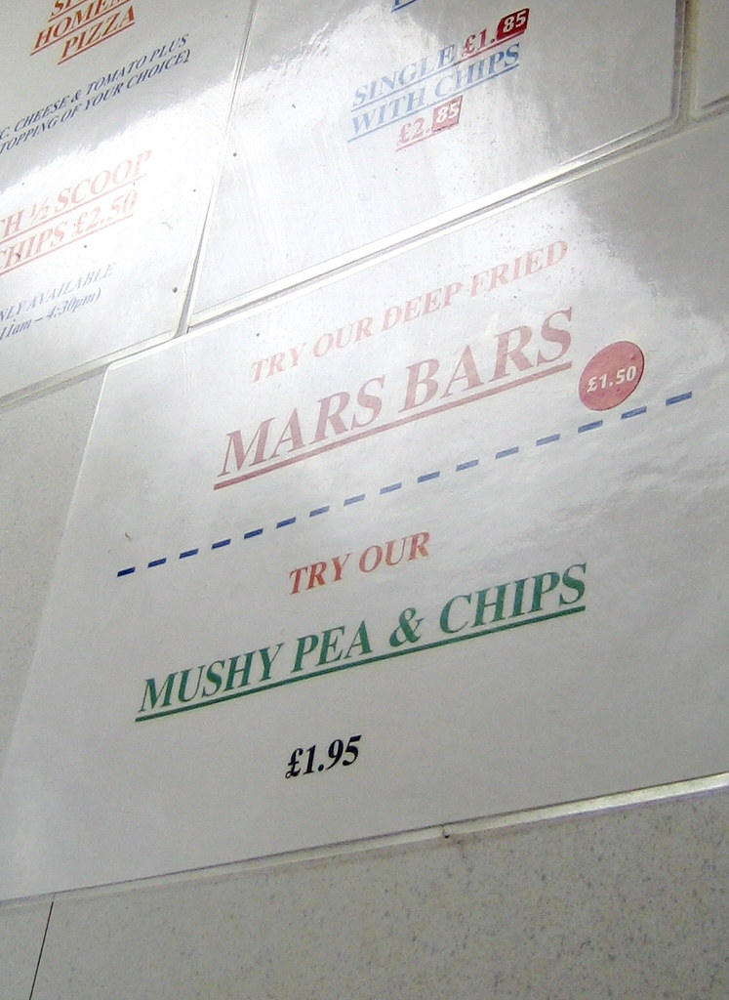

Scottish writers number among some of the most DANGEROUS in history: Arthur Conan Doyle, Robert Louis Stevenson, Irvine Welsh, J.K. Rowling, and other, lesser luminaries, including the poet Robert Burns, and the supposedly influential novelist "Sir" Walter Scott. (It must be noted that no true Scotsman would allow himself to be known by such a thoroughly colonial English moniker.) It's true that Conan Doyle went to Edinburgh University by way of England, and that gives him all the markings of an Englishman, but such a DANGEROUS writer could only be Scottish! J.K. Rowling, of course, has become progressively more DANGEROUS on her journey from The Elephant House to Twitter troll.
Scottish food is DANGEROUS! For your heart, your cholesterol levels, and your general well-being. It's fried food galore, and it's more than just fish and chips. If you want to deep-fry it, a Scottish chippy will do that for you. Mars bar? Butter battered and fried, please! Throw in the occasional exploding haggis and a Scottish supper will have you running for your life, if you'd like to keep it.
Scottish tour guides, while not generally personally dangerous, are quite keen to tell you about the DANGER all around you. There's not a hike, ferry crossing, or Edinburgh close that you might not DIE in! What philosophy student would fail to acknowledge that No True Scotsman is the MOST DANGEROUS of all logical fallacies?